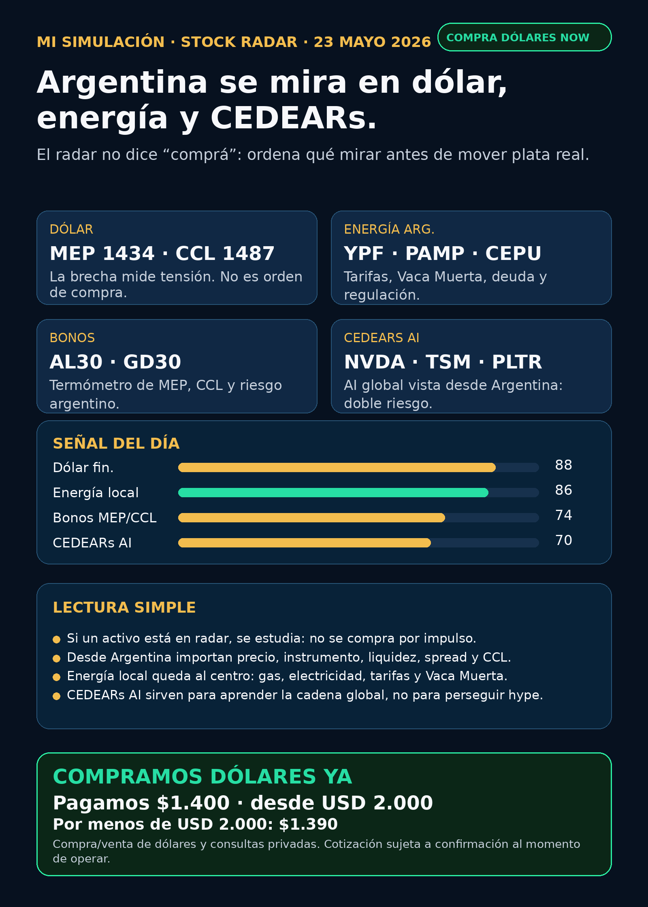

Dólar & Acciones YA!
Un radar gratuito para entender dólar, CEDEARs, energía y acciones desde Argentina. La idea no es adivinar: es aprender qué mirar antes de mover plata real.
COMPRAMOS DÓLARES YAServicio privado por mensaje. Cotización sujeta a confirmación al momento de operar.

Audio descriptivo de Lola
Resumen hablado para WhatsApp: qué mirar hoy, por qué importa y cómo leerlo desde Argentina.
Links útiles
Dólar & Acciones YA! — 23/05/2026
Lectura simple
Hoy la idea es fácil: no queremos que una persona común adivine el mercado. Queremos que entienda qué está mirando antes de tomar decisiones con plata real.
La inteligencia artificial ya no se juega solamente en chips. También se juega en electricidad, data centers, red, energía, dólar e instrumentos disponibles para invertir desde Argentina.
Este radar no dice “comprá”. Ordena qué mirar primero.
Tesis del día
AI se paga dos veces:
1. Primero en chips: NVIDIA, TSM, ASML, memoria, cloud y data centers.
2. Después en electricidad: generación, transmisión, gas, nuclear, utilities, Vaca Muerta, tarifas y regulación.
Para Argentina, la lectura tiene doble pantalla:
- Pantalla global: AI, chips, data centers, pharma, space y autonomy.
- Pantalla local: dólar MEP/CCL, CEDEARs, liquidez, spread, bonos, energéticas argentinas y riesgo regulatorio.
Dólar y Argentina
Dato de referencia de esta edición: DolarAPI mostró dólar MEP/Bolsa venta cerca de 1434,3 y CCL venta cerca de 1486,6 con actualización del 23/05.
Esto no es señal de compra. Es contexto para entender tensión, calma y precio de instrumentos locales.
En criollo: cuando una persona compra un CEDEAR no compra solo “NVIDIA” o “Google”. También se expone al CCL implícito, a la liquidez local, al spread y a las comisiones.
Fuente dólar: https://dolarapi.com/v1/dolares
Infra AI
NVIDIA sigue siendo la referencia central de infraestructura AI. La compañía reportó Q1 FY2027 con ingresos de USD 81.6B y Data Center de USD 75.2B. Eso confirma demanda real por infraestructura.
Pero una empresa excelente puede estar cara. Buen negocio no significa buena inversión a cualquier precio.
También siguen en radar:
- TSM: foundry avanzada.
- ASML: litografía, cuello de botella físico.
- MU: memoria/HBM, más cíclica.
- GOOGL/Alphabet: cloud, TPUs, distribución y Waymo.
- PLTR: software operativo AI, con riesgo de valuación.
Fuente NVIDIA: https://nvidianews.nvidia.com/news/nvidia-announces-financial-results-for-first-quarter-fiscal-2027
Energía global y energía argentina
Sin electricidad no hay fábricas de AI. Esa es la capa nueva del radar.
Afuera entran utilities, generación, transmisión, nuclear, gas, transformadores, data centers y cooling. El anuncio Google + Blackstone para TPU cloud muestra que AI también requiere edificios, energía y capital: Blackstone comprometió inicialmente USD 5B y el plan espera 500MW online en 2027.
Fuente Google/Blackstone: https://blog.google/innovation-and-ai/infrastructure-and-cloud/google-cloud/blackstone-tpu-cloud/
Desde Argentina, energía no puede quedar afuera. Entran como radar educativo:
- YPF
- Pampa Energía
- TGS
- Central Puerto
- Edenor
- Transener
No significa comprar energéticas. Significa mirar negocio real, precio, regulación, deuda, exportaciones, tarifas y riesgo argentino.
Pharma y salud
GLP-1 sigue en radar porque obesidad y diabetes son mercados enormes. Novo Nordisk y Lilly son nombres centrales.
Novo tuvo señales regulatorias verificadas sobre Wegovy oral y Wegovy 7.2 mg. La FDA también publicó una warning letter a un proveedor chino de semaglutide API. Eso muestra que en pharma no alcanza con demanda fuerte: importan calidad, producción, patentes, regulación y competencia.
Fuentes:
Space y riesgo especulativo
Rocket Lab sigue en radar por space systems, defensa y lanzamientos. Pero también aparece riesgo de dilución: un programa para vender acciones por hasta USD 3.0B puede financiar crecimiento y también diluir al accionista.
En criollo: space puede ser tesis interesante de largo plazo, pero no es núcleo defensivo. Es volatilidad, financiamiento, contratos, ejecución y riesgo.
Fuente RKLB: https://www.sec.gov/Archives/edgar/data/1819994/000181999426000044/rocketlabcorporation-424b5.htm
Autonomy y physical AI
Autonomy sigue en seguimiento, pero no como promesa mágica. Waymo entra vía Alphabet. Tesla mezcla autos, energía, robotaxis y robotics. Uber puede beneficiarse o sufrir según cómo avance robotaxi. Amazon/Zoox es exposición indirecta. Joby es eVTOL, regulación pesada y alto riesgo.
La regla: no comprar futuro sin mirar ingresos actuales, regulación, competencia y precio.
Señal del día
La señal no es “comprá AI”. La señal es que AI se está convirtiendo en infraestructura física.
Chips, electricidad, data centers, red, capital y dólar forman parte del mismo mapa.
Para el lector argentino, la prioridad es separar cuatro capas:
1. Empresa.
2. Precio.
3. Instrumento.
4. Cartera personal.
Servicio privado
Si querés comprar o vender dólares, invertir en acciones, mirar CEDEARs o pensar una estrategia financiera más personalizada, escribime por privado y lo vemos caso por caso.
Para dólar de hoy: pagamos $1.400 por fracciones desde USD 2.000. Por menos de USD 2.000: $1.390. Cotización sujeta a confirmación al momento de operar.
Reporte gratuito informativo. No es asesoramiento financiero personalizado ni promesa de resultado.
Compra/venta de dólares y consulta privada
Si querés comprar o vender dólares, mirar CEDEARs, acciones o ordenar una estrategia financiera personal, escribime por privado y lo vemos caso por caso.
Reporte gratuito informativo. No es asesoramiento financiero personalizado ni promesa de resultado.